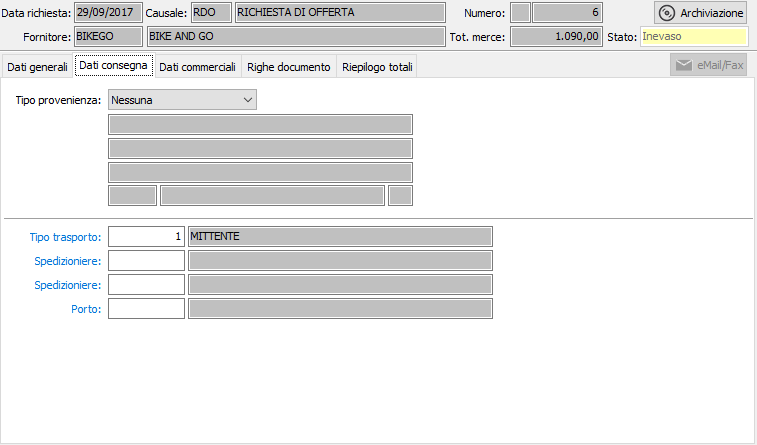

Dati di consegna
La sezione video dati di consegna è situata in questa posizione perché la compilazione automatica di alcuni campi della successiva linguetta dati commerciali può essere influenzata dal contenuto dell’eventuale Provenienza qui indicata.
Si ricorda infatti che la tabella destinazioni diverse dei fornitori non contiene soltanto l’indirizzo di provenienza diversa, ma può contenere anche modalità di pagamento, domiciliazione bancarie, riferimento a listini diversi rispetto a quelli presenti nell’anagrafica del fornitore intestatario della richiesta di offerta.
In questo caso, i corrispondenti campi della finestra video dati commerciali vengono compilati con le informazioni presenti in anagrafica destinazione diversa anzichè con quelli presenti in anagrafica del fornitore intestatario.

TIPO PROVENIENZA: combo box per attivare l’eventuale inserimento di una provenienza diversa ed, in caso positivo, per indicare se la provenienza diversa è presente in anagrafica destinazioni o meno. Valori ammessi:
Nessuna: confermando, vengono ignorate tutte le informazioni relative alla provenienza.
Libera: confermando, si passa alla descrizione di una provenienza diversa occasionale.
Codificata: confermando, si passa al campo codice per scegliere una provenienza memorizzata per il fornitore. Sul campo sono attive le funzioni di ricerca (F9) ed accesso rapido (CTRL+W).
CODICE: codice numerico della provenienza diversa, associata al fornitore. Il campo è visualizzato e significativo solo se il campo precedente ha il valore codificato. Sul campo sono attive le funzioni di ricerca (F9) ed accesso rapido (CTRL+W) per eventuali nuovi inserimenti o variazioni. A conferma, viene visualizzata la ragione sociale e l’indirizzo di provenienza diversa.
PROVENIENZA DIVERSA 1: campo alfanumerico di 50 caratteri, abilitato solo nel caso in cui il campo tipo provenienza contiene il valore Libera, per descrivere la provenienza diversa.
PROVENIENZA DIVERSA 2: campo alfanumerico di 50 caratteri, abilitato solo nel caso in cui il campo tipo provenienza contiene il valore Libera, per descrivere la provenienza diversa.
INDIRIZZO: campo alfanumerico di 50 caratteri abilitato, solo nel caso in cui il campo tipo provenienza contiene il valore Libera, per descrivere l’indirizzo della provenienza diversa.
CAP, LOCALITÀ, PROVINCIA: campi alfanumerici di 3, 50 e 2 caratteri, abilitati solo nel caso in cui il campo tipo provenienza contiene il valore Libera, per inserire i corrispondenti dati della provenienza diversa.
TIPO TRASPORTO: codice numerico presente nella tabella tipi di trasporto per definire le modalità di trasporto. Viene proposto, se presente, il codice esistente in anagrafica del fornitore. Sul campo sono attive le funzioni di ricerca (F9) ed accesso rapido alla tabella (CTRL+W).
SPEDIZIONIERE 1: eventuale codice del primo spedizioniere, in caso di trasporto a mezzo vettore. Viene proposto, se presente, il codice esistente in anagrafica del fornitore. Sul campo sono attive le funzioni di ricerca (F9) ed accesso rapido alla tabella (CTRL+W).
SPEDIZIONIERE 2: eventuale codice del secondo spedizioniere, in caso di trasporto a mezzo vettore. Viene proposto, se presente, il codice esistente in anagrafica del fornitore. Sul campo sono attive le funzioni di ricerca (F9) ed accesso rapido alla tabella (CTRL+W).
CODICE PORTO: eventuale codice delle modalità di porto. Viene proposto, se presente, il codice esistente in anagrafica del fornitore. Sul campo sono attive le funzioni di ricerca (F9) ed accesso rapido alla tabella (CTRL+W).